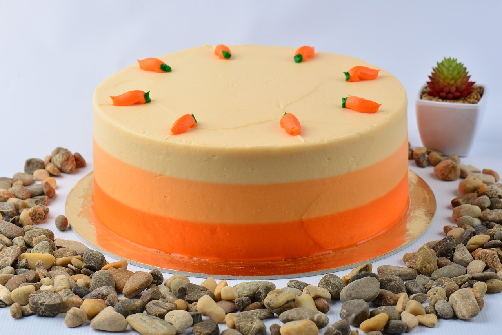

Receita de Bolo de Cenoura
Ingredientes
- 3 cenouras médias
- 4 ovos
- 1 xícara de óleo
- 2 xícaras de açúcar
- 2 e 1/2 xícaras de farinha de trigo
- 1 colher de sopa de fermento em pó
Modo de Preparo
- Bata no liquidificador as cenouras, ovos e óleo até obter
uma mistura homogênea.
- Adicione o açúcar e bata novamente.
- Em uma tígela, misture a farinha e o fermento, e em seguida
adicione à mistura do liquidificador.
- Despeje a massa em uma forma untada e enfarinhada.
- Asse em forno pré-aquecido a 180ºC por cerca de 40 minutos.
